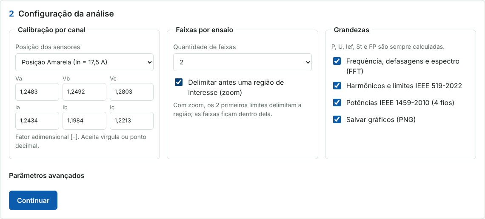
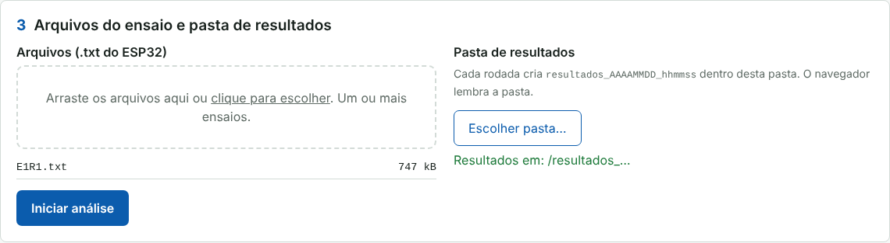
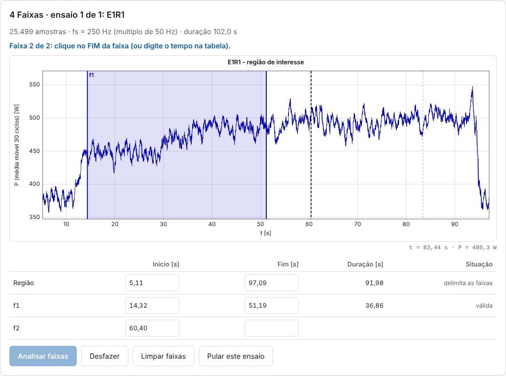
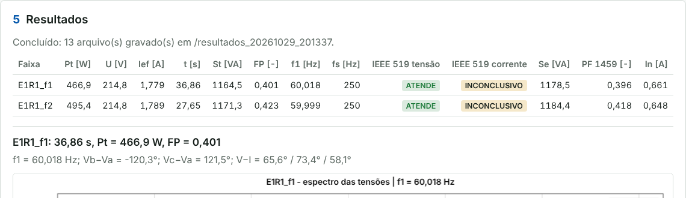

Manual técnico de uso: grandezas elétricas
Módulo de grandezas elétricas do LabForce NUPEF, versão web 1.1.0 (método Potencias_Eletricas v5.3.3). Redação conforme a ASD-STE100, adaptada ao português.
1 Escopo e aplicação
Este manual dá as instruções de uso do módulo de grandezas elétricas.
O módulo calcula grandezas elétricas de um sistema trifásico a 4 fios (3F+N). Os dados de entrada são os arquivos de aquisição do ESP32 (.txt). O módulo funciona no navegador. Os arquivos não saem do computador.
O módulo faz estas tarefas:
- Detecta a taxa de amostragem de cada ensaio.
- Calcula a potência ativa, a tensão, a corrente efetiva, a potência aparente e o fator de potência.
- Mede a frequência da rede e as defasagens entre canais (FFT).
- Avalia os harmônicos com os limites da IEEE 519-2022.
- Calcula as potências da IEEE 1459-2010 para 4 fios.
- Grava os resultados em arquivos CSV, TXT e PNG numa pasta do computador.
O módulo não faz estas tarefas:
- Não mede a corrente de neutro. O módulo calcula a corrente de neutro.
- Não avalia a conformidade legal no ponto de acoplamento comum (PCC). Os resultados são indicativos do equipamento.
- Não separa sem ambiguidade os harmônicos acima da metade da taxa de amostragem.
NOTA: O método é o mesmo da rotina Scilab Potencias_Eletricas v5.3.3. Nos mesmos arquivos e nas mesmas faixas, os resultados são iguais aos do Scilab (seção 6).
2 Convenções de formatação
Este manual usa a mesma formatação em todas as seções.
| Elemento | Formatação | Exemplo |
|---|---|---|
| Arquivo, campo, mensagem | Fonte de código | dados_obtidos.csv, relatorio.txt |
| Botão ou opção da tela | Negrito | Continuar, Analisar faixas |
| Unidade de medida | Entre colchetes | P [W], fs [Hz] |
| Procedimento | Lista numerada, uma ação por passo | 1. Abra o módulo. |
| Figura | Imagem e legenda em itálico abaixo | Figura 1 — … |
| Instrução de segurança | Rótulo em negrito antes do texto | ADVERTÊNCIA:, CUIDADO:, NOTA: |
Os rótulos de segurança têm este significado:
- ADVERTÊNCIA: instrução que evita lesão ou morte.
- CUIDADO: instrução que evita dano ao equipamento ou perda de dados.
- NOTA: informação útil que não é uma instrução de segurança.
3 Termos e símbolos
Cada termo desta tabela tem um só significado neste manual.
| Termo | Significado |
|---|---|
| Ensaio | Um arquivo .txt de aquisição do ESP32 (exemplo: E1R1.txt). |
| Faixa | Um intervalo de tempo do ensaio que o operador seleciona para a análise. |
| Região de interesse | O intervalo que os 2 primeiros limites delimitam no modo com zoom. |
| Rodada | Uma análise completa, do botão Iniciar análise até a mensagem Concluído. |
| Pasta de resultados | A pasta resultados_AAAAMMDD_hhmmss que o módulo cria em cada rodada. |
| Canal | Uma entrada do ESP32: Va, Vb, Vc, Ia, Ib ou Ic. |
| Fator de calibração | O número que multiplica o sinal de um canal [-]. |
| Taxa de amostragem (fs) | A quantidade de amostras por segundo de cada canal, ajustada no firmware [Hz]. |
| Janela síncrona | Uma janela de análise com um número inteiro de ciclos da rede e de amostras. |
| f1 | Frequência fundamental da rede [Hz]. |
| P, Pt | Potência ativa [W]. |
| Se | Potência aparente efetiva da IEEE 1459 [VA]. |
| St | Potência aparente aritmética (método convencional) [VA]. |
| PF | Fator de potência = P/Se [-]. |
| FP | Fator de potência convencional = P/St [-]. |
| IL | Corrente de demanda máxima no PCC [A]. |
| Isc/IL | Relação entre a corrente de curto-circuito e IL no PCC [-]. |
| LD | Limite de detecção. Abaixo do LD, o valor é ruído [%]. |
| PCC | Ponto de acoplamento comum com a rede da concessionária. |
| P99 | Percentil 99 dos valores de 3 s da faixa. |
4 Advertências e cuidados gerais
ADVERTÊNCIA: Desligue e bloqueie o circuito antes de instalar as pontas de tensão. O contato com partes energizadas pode causar choque elétrico e morte.
ADVERTÊNCIA: Use somente sensores e pontas com categoria de medição e tensão nominal adequadas ao circuito. Um sensor inadequado pode falhar e causar choque elétrico.
CUIDADO: Não abra os arquivos CSV da pasta de resultados durante a rodada. O módulo grava os arquivos após cada faixa, e a gravação pode falhar.
CUIDADO: Use os fatores de calibração da posição do sensor em uso. Um fator errado dá potências erradas sem aviso.
CUIDADO: Sem gravação direta em pasta (seção 5), não feche a aba antes do download do .zip. Os resultados ficam só na memória do navegador.
NOTA: Os resultados são indicativos. A IEEE 519 se aplica ao PCC, não ao equipamento.
5 Acesso e arquivos
O módulo é uma página web. Não é necessário instalar programas. O endereço é https://resendepengmec-ai.github.io/labforce-nupef/eletrica/.
| Navegador | Gravação dos resultados |
|---|---|
| Chrome ou Edge no computador | Direto na pasta que o operador escolhe. O navegador lembra a pasta. |
| Firefox, Safari ou celular | Num arquivo .zip que o navegador baixa no fim da rodada. |
O código do módulo fica no repositório labforce-nupef, nestes arquivos:
| Arquivo | Função |
|---|---|
eletrica/index.html, js/app.js | Tela e fluxo da análise. |
js/nucleo.js | Leitura, taxa de amostragem, RMS, potências básicas, FFT (equivale a funcoesPotencia.sci). |
js/ieee519.js | Harmônicos e limites da IEEE 519-2022 (equivale a qualidadeIEEE519.sci). |
js/ieee1459.js | Potências da IEEE 1459-2010 (equivale a potenciasIEEE1459.sci). |
js/analise.js, js/figuras.js | Fluxo de um ensaio, linhas dos CSV e gráficos. |
js/autoteste.js, testes/ | Teste de verificação (seção 6) e comparação com o Scilab. |
../comum/ | Partes comuns aos módulos: FFT, gráficos, seleção de faixas, gravação e estilos. |
5.1 Procedimento de acesso
- Abra o Chrome ou o Edge no computador do laboratório.
- Abra o endereço do módulo.
- Faça o teste de verificação (seção 6) no primeiro uso do computador.
NOTA: A página atualiza sozinha quando o repositório muda. Se a tela mostrar uma versão antiga, pressione Ctrl+F5. A versão aparece no rodapé da tela de análise.
6 Teste de verificação
Faça este teste no primeiro uso de um computador e após cada atualização do módulo. O teste usa sinais sintéticos com resultado conhecido, inclusive um ensaio completo a 800 Hz com P = 1650 W.
6.1 Procedimento
- Clique em Executar a verificação.
- Aguarde o fim do teste. O tempo é menor que 10 s.
- Confirme que a mensagem mostra
Grandezas elétricas: 45 verificações OK.
CUIDADO: Se a mensagem mostrar FALHA, não use o módulo. Pressione Ctrl+F5 e faça o teste outra vez. Se a falha continuar, informe o responsável pelo módulo.
NOTA: O responsável pelo módulo também compara a versão web com o Scilab v5.3.3 nos mesmos arquivos. Comando no repositório: npm test. Resultado da versão 1.1.0: 402 de 402 linhas iguais.
7 Ligação 3F+N
O módulo considera um sistema trifásico a 4 fios com tensões medidas entre fase e neutro. A figura 1 mostra a ligação.

7.1 Procedimento de ligação
ADVERTÊNCIA: Desligue e bloqueie o circuito antes de instalar as pontas de tensão. O contato com partes energizadas pode causar choque elétrico e morte.
- Instale o sensor de corrente Ia no condutor da fase A.
- Instale o sensor de corrente Ib no condutor da fase B.
- Instale o sensor de corrente Ic no condutor da fase C.
- Coloque a seta de cada sensor de corrente no sentido rede → carga.
- Conecte a ponta Va na fase A.
- Conecte a ponta Vb na fase B.
- Conecte a ponta Vc na fase C.
- Conecte a ponta N no neutro.
- Confirme que cada sensor de corrente está na mesma fase da ponta de tensão correspondente: Ia com Va, Ib com Vb, Ic com Vc.
- Confirme que a sequência de fases é A-B-C.
CUIDADO: Um sensor de corrente com a seta invertida dá potência negativa na fase. Um sensor na fase errada dá potências e fator de potência errados.
NOTA: O módulo não mede a corrente de neutro. O módulo calcula In = −(ia + ib + ic). Para conferir, meça a corrente de neutro com um alicate amperímetro.
NOTA: No relatório, Vb−Va deve ser próximo de −120° e Vc−Va próximo de +120°. Outros valores indicam sequência de fases errada.
8 Parâmetros
Os parâmetros ficam na etapa 2 da tela (figura 3). Os fatores de calibração ficam no quadro Calibração por canal. Os outros ficam em Parâmetros avançados. O navegador lembra os valores. Altere um parâmetro somente na condição da coluna “Quando alterar”.
| Campo | Valor padrão | Unidade | Quando alterar |
|---|---|---|---|
| Posição dos sensores e fatores Va … Ic | Posição Amarela | - | Quando a posição do sensor mudar. Escolha Personalizada para digitar outros fatores. |
| Frequência da rede | 60 | Hz | Quando a rede for de 50 Hz. |
| Média móvel do gráfico | 30 | ciclos | Para mais ou menos suavização no gráfico de seleção. Não altera os resultados. |
| Faixa mínima | 1 | s | Para aceitar faixas mais curtas ou exigir faixas mais longas. |
| Isc/IL no PCC | 10 | - | Quando a relação Isc/IL do PCC for conhecida. |
| IL | vazio (automático) | A | Quando a corrente de demanda máxima do PCC for conhecida. Vazio usa a maior corrente da faixa. |
| Atraso dos canais | 0 0 0 0 0 0 | µs | Quando o atraso entre canais do ADC for medido. 1° a 60 Hz = 46 µs. |
NOTA: A taxa de amostragem não é um parâmetro. O módulo detecta a taxa de cada ensaio (seção 9).
NOTA: Com IL automático, a TDD fica maior que a real. Use o valor real de IL para avaliar a TDD.
NOTA: Restaurar padrões volta os parâmetros avançados aos valores desta tabela.
9 Taxa de amostragem
O módulo detecta automaticamente a taxa de amostragem de cada ensaio. O módulo aceita qualquer taxa ajustada no firmware do ESP32. Ensaios com taxas diferentes podem estar na mesma rodada.
9.1 Detecção
O módulo mede a posição da frequência da rede no espectro da tensão Va. Com esta posição, o módulo calcula a taxa de amostragem.
A estimativa tem incerteza de aproximadamente 0,2 %, porque a frequência da rede varia aproximadamente 0,1 Hz. Por isso, o módulo arredonda a estimativa para o primeiro valor desta tabela a menos de 0,3 % da estimativa.
| Ordem | Valor redondo | Exemplos de taxa |
|---|---|---|
| 1 | Múltiplo de 100 Hz | 800 Hz, 1000 Hz, 2000 Hz, 6400 Hz |
| 2 | Múltiplo de 50 Hz | 250 Hz |
| 3 | Múltiplo de 25 Hz | 175 Hz |
| 4 | Múltiplo de 10 Hz | 1010 Hz |
| 5 | Período múltiplo de 100 µs | 3000 µs = 333,33 Hz |
| 6 | Múltiplo de 5 Hz | 1005 Hz |
| 7 | Período múltiplo de 10 µs | 4730 µs = 211,42 Hz |
| 8 | Número inteiro em Hz | Raro: as ordens 6 e 7 quase sempre se aplicam antes |
A tela, o relatório e a coluna fs [Hz] do dados_obtidos.csv mostram a taxa usada e a regra aplicada. Exemplo do relatório:
S1000: taxa de amostragem = 1000 Hz (estimada pela rede: 999.65 Hz; multiplo de 100 Hz)
NOTA: Duas taxas a menos de 0,3 % uma da outra são indistinguíveis. Exemplo: 333 Hz e 333,33 Hz (3000 µs). Nesse caso, o módulo usa o valor da ordem menor da tabela.
NOTA: Se nenhum valor da tabela estiver a menos de 0,3 %, o módulo usa a taxa estimada e mostra AVISO ... sem valor redondo a menos de 0,3 %.
NOTA: Um período que não é múltiplo de 100 µs pode ser arredondado para um múltiplo de 5 Hz. Exemplo: 1230 µs (813,01 Hz) dá 815 Hz, com erro de 0,25 %. Prefira no firmware taxas múltiplas de 10 Hz ou períodos múltiplos de 100 µs.
9.2 Janela síncrona
As análises da IEEE 519 e da IEEE 1459 usam janelas de 12 ciclos da rede (200 ms). Cada janela deve ter um número inteiro de amostras. Se 12 ciclos não dão um número inteiro de amostras, o módulo usa o número de ciclos mais próximo de 12 que dá.
| Taxa [Hz] | Ciclos por janela | Amostras por janela | Janelas em 3 s |
|---|---|---|---|
| 250 | 12 | 50 | 15 |
| 800 | 12 | 160 | 15 |
| 1000 | 12 | 200 | 15 |
| 333,33 | 9 | 50 | 20 |
NOTA: Uma janela que não é síncrona dá harmônicos falsos. A média móvel do gráfico de seleção usa a mesma regra.
9.3 Verificação de taxa instável (FS_INSTAVEL)
O módulo também estima a taxa em blocos de 10 s. Se a estimativa variar mais de 0,5 % no ensaio, o módulo:
- Mostra
AVISO ... a taxa variou ... %na tela e no relatório. - Marca a situação IEEE 519 do ensaio como
FS_INSTAVEL.
CUIDADO: Com FS_INSTAVEL, não use os resultados de harmônicos, de f1 e de tempo do ensaio. P, U e I continuam válidos. Verifique o firmware.
NOTA: Com a taxa ajustada no firmware, a variação normal é menor que 0,1 %. FS_INSTAVEL indica uma falha do firmware ou da aquisição.
10 Procedimento de uso
Uma rodada tem 5 etapas: ligação, configuração, arquivos, faixas e resultados. A barra de etapas mostra a etapa atual (figura 2). Uma etapa concluída fica recolhida, com um resumo. Antes de iniciar a análise, Alterar reabre a etapa.
10.1 Confirmar a ligação
- Abra o módulo (seção 5.1).
- Compare a ligação real com o esquemático da etapa 1.
- Se a ligação estiver correta, clique em OK, estou ciente da aplicação.
- Se a ligação estiver diferente, corrija a ligação (seção 7) antes de continuar.
10.2 Configurar a análise

- Em Posição dos sensores, escolha a posição em uso. Os 6 campos mostram os fatores dessa posição.
- Confirme o fator de cada canal. Se necessário, digite o fator correto. Use vírgula ou ponto decimal.
- Em Quantidade de faixas, escolha quantas faixas vai avaliar em cada ensaio (1 a 8).
- Para delimitar antes uma região de interesse, marque Delimitar antes uma região de interesse (zoom).
- Marque as grandezas da análise.
- Se necessário, abra Parâmetros avançados e altere os campos (seção 8).
- Clique em Continuar.
NOTA: Um valor inválido fica com a borda vermelha e uma mensagem abaixo do campo. A etapa só continua com todos os campos válidos.
NOTA: As potências básicas (P, U, Ief, St, FP) são sempre calculadas. A quantidade de faixas é a mesma para todos os ensaios da rodada.
10.3 Escolher os arquivos e a pasta

- Arraste os arquivos
.txtpara a área tracejada, ou clique na área e escolha os arquivos. - Confira a lista dos arquivos.
- Clique em Escolher pasta… e escolha a pasta de resultados. Nos próximos usos, clique em Usar a pasta “…”.
- Se o navegador pedir permissão de escrita, clique em Permitir.
- Clique em Iniciar análise.
NOTA: Sem gravação direta em pasta, a etapa não mostra o botão de pasta. Os resultados vão para um .zip.
NOTA: O módulo analisa os arquivos em ordem de nome. Os ensaios podem ter taxas de amostragem diferentes.
10.4 Selecionar as faixas

O gráfico mostra a potência ativa suavizada do ensaio. A linha acima do gráfico mostra a próxima ação. Cada limite pode ser marcado de duas formas: com um clique no gráfico ou com o tempo digitado na tabela.
Com zoom:
- Clique no início da região de interesse.
- Clique no fim da região de interesse. O gráfico mostra só a região de interesse.
- Clique no início da faixa 1.
- Clique no fim da faixa 1. O módulo marca a faixa com a cor e o rótulo f1.
- Faça os passos 3 e 4 para cada faixa seguinte.
- Confira os tempos e a situação de cada faixa na tabela.
- Clique em Analisar faixas.
Sem zoom, faça os passos 3 a 7.
Para usar o teclado:
- Digite o tempo [s] no campo Início ou Fim da linha da tabela.
- Pressione Tab. O gráfico e a tabela mostram o novo valor.
NOTA: Desfazer (ou Ctrl+Z) remove o último limite marcado. Limpar faixas remove todos os limites do ensaio. Pular este ensaio passa ao próximo ensaio sem análise.
NOTA: Um limite fora da região de interesse fica limitado à borda da região.
NOTA: Uma faixa menor que a faixa mínima fica marcada em cinza com o texto “(curta)”. O módulo não analisa esta faixa. As outras faixas mantêm o número escolhido.
10.5 Concluir a rodada
- Aguarde a análise de cada ensaio. A linha de progresso mostra a faixa em análise.
- Aguarde a mensagem
Concluído: … arquivo(s) gravado(s) em …. - Abra a pasta de resultados no computador, ou abra o
.zipbaixado.
NOTA: Nova análise volta à etapa 3 com a mesma configuração.
11 Resultados
Cada rodada cria uma pasta de resultados nova. O módulo não substitui os resultados de rodadas anteriores.
Com 1 faixa por ensaio, o rótulo é o nome do ensaio (exemplo: E1R1). Com 2 ou mais faixas, o rótulo tem o número da faixa (exemplo: E1R1_f2).

| Arquivo | Quando o módulo grava | Conteúdo |
|---|---|---|
relatorio.txt | Sempre | Calibração, opções, parâmetros, taxa de amostragem, avisos e resultados de cada faixa. |
dados_obtidos.csv | Sempre | Uma linha por faixa: Pt [W], U [V], Ief [A], t [s], St [VA], FP [-], f1 [Hz], fs [Hz]. Separador: espaço. Decimal: vírgula. |
ieee519_resumo.csv | IEEE 519 marcada | Uma linha por faixa: THDv, TDD, THDi [%], IL [A], LD [%] e situação. Separador: ponto e vírgula. |
<rótulo>_IEEE519_harmonicos.csv | IEEE 519 marcada | Uma linha por grupo de ordens harmônicas, com limites e situação. |
ieee1459_resumo.csv | IEEE 1459 marcada | Uma linha por faixa: P, Se, PF, Ve, Ie, In, P1+, Q1+, S1+, PF1+, SU1, LU, desequilíbrios, THDe, SeN, DeI, DeV, SeH, PH, HP. |
<ensaio>_faixas.png | Gráficos marcados | Potência suavizada do ensaio com as faixas marcadas (registro da seleção). |
<rótulo>_espectro.png | FFT e gráficos marcados | Espectro de amplitude das tensões [V] e das correntes [A]. |
<rótulo>_IEEE519.png | IEEE 519 e gráficos marcados | Harmônicos de V e I, THDv e TDD por bloco de 3 s, com limites e LD. |
<rótulo>_IEEE1459.png | IEEE 1459 e gráficos marcados | Potências, fatores de potência, desequilíbrios e THD efetiva por bloco de 3 s. |
NOTA: Os gráficos usam a mesma cor e o mesmo marcador para cada série: série 1 azul com círculo, série 2 verde com x, série 3 vermelha com triângulo e série 4 magenta com quadrado. As legendas mostram a unidade entre colchetes.
NOTA: Para sistemas a 4 fios, use Se e PF do arquivo ieee1459_resumo.csv. O dados_obtidos.csv usa St aritmética e Ief sem neutro, como as versões anteriores.
12 Interpretação e limites de medição
12.1 Situação na IEEE 519
O módulo compara o P99 dos valores de 3 s com o limite diário da norma: 1,5 × o limite para tensão e 2,0 × o limite para corrente.
| Situação | Significado |
|---|---|
ATENDE | O valor está abaixo do menor limite das ordens do grupo. |
EXCEDE | O valor, sem o LD, está acima do maior limite das ordens do grupo. |
INCONCL_ORDEM | O valor está entre o menor e o maior limite. O resultado depende da ordem harmônica real. |
INCONCL_RUIDO | O valor está acima do maior limite, mas o ruído pode explicar a diferença. |
FS_INSTAVEL | A taxa de amostragem variou mais de 0,5 % no ensaio (seção 9.3). A avaliação de harmônicos não é válida. |
Na tabela-resumo da tela, a situação geral de tensão e de corrente é ATENDE, EXCEDE, INCONCLUSIVO ou FS_INSTAVEL.
12.2 Limites de medição
- Taxa de amostragem. Os harmônicos acima da metade da taxa ficam rebatidos em grupos de ordens. A 250 Hz, as ordens 2 a 50 ficam em 11 grupos. A 800 Hz e a 1 kHz, há menos grupos com ordens misturadas. Com 6 kHz ou mais, cada grupo tem uma só ordem. THDv, TDD e as potências da IEEE 1459 são válidas em todas as taxas.
- Ruído do ADC. O ruído da corrente é aproximadamente 0,06 A por raia a 250 Hz. O módulo subtrai o ruído. Valores abaixo do LD não são conclusivos.
- Corrente de neutro. O módulo calcula In pela soma das correntes. Erros de calibração e de atraso entre canais aparecem em In.
- Atraso entre canais. O ADC do ESP32 converte os canais em sequência. O atraso altera os ângulos, Q1+, SU1 e os desequilíbrios. Use o campo de atraso dos canais para corrigir.
- Duração do ensaio. As regras semanais de 10 min da IEEE 519 não são avaliáveis em ensaios de 1 a 2 min.
- Ponto de medição. A IEEE 519 se aplica ao PCC. A medição no quadro da máquina é indicativa.
NOTA: Com o motor parado, LU e THDeI não têm significado físico. A corrente é quase só ruído.
13 Falhas e soluções
| Sintoma | Causa provável | Ação |
|---|---|---|
Tela de uma versão antiga ou verificação com FALHA | O navegador usa arquivos antigos da memória. | Pressione Ctrl+F5. Faça a verificação (seção 6) outra vez. |
| Aviso: “Este navegador não grava direto em pasta” | O navegador não tem gravação em pasta (Firefox, Safari, celular). | Use o .zip, ou use Chrome ou Edge no computador. |
| “Permissão de escrita negada” ou “Não foi possível acessar a pasta lembrada” | O navegador não deu permissão, ou a pasta mudou de lugar. | Clique em Escolher pasta… e escolha a pasta outra vez. |
arquivo sem dados numéricos de 6 colunas | O arquivo não é do ESP32, ou as colunas estão incompletas. | Confira o arquivo. Cada linha de dados deve ter 6 números. |
fs = … é insuficiente para a rede | A taxa é menor que 2,2 × a frequência da rede. | Aumente a taxa no firmware. |
AVISO ... sem valor redondo a menos de 0,3 % | A taxa do firmware não é um valor redondo, ou a rede está fora de 60 Hz. | Confirme a taxa no firmware. O módulo usa a taxa estimada, com erro de até 0,2 %. |
AVISO ... a taxa variou ... % | A taxa de amostragem não foi constante no ensaio. | Use P, U e I. Não use os resultados de harmônicos. Verifique o firmware. |
Aviso: sem janela sincrona | A taxa não permite janela com número inteiro de amostras. | Use no firmware uma taxa múltipla de 10 Hz ou um período múltiplo de 100 µs. |
faixa N IGNORADA ou faixa “(curta)” | Faixa menor que a faixa mínima. | Altere os tempos da faixa na tabela antes de clicar em Analisar faixas. |
| Analisar faixas desabilitado | Falta um limite, ou todas as faixas são curtas. | Siga a linha de instrução acima do gráfico. |
| Potência negativa numa fase | Seta do sensor de corrente invertida. | Inverta o sensor da fase (seção 7). |
| Vb−Va diferente de −120° | Sequência de fases errada ou ponta na fase errada. | Confira a ligação das pontas de tensão (seção 7). |
| In alta com carga trifásica equilibrada | Erro de calibração, atraso entre canais ou carga monofásica real. | Meça a corrente de neutro com alicate amperímetro. Confira os fatores de calibração. |
| Corrente sempre INCONCLUSIVO na IEEE 519 | Grupos de ordens rebatidas e ruído do ADC. | Use a TDD. Para conclusão por harmônico, aumente a taxa de amostragem. |
| Aviso “erro na análise” num ensaio | Erro durante a análise do ensaio. | Os resultados das faixas anteriores ficam gravados. Veja a mensagem no relatorio.txt. |
14 Referências
- AEROSPACE, SECURITY AND DEFENCE INDUSTRIES ASSOCIATION OF EUROPE (ASD). ASD-STE100: Simplified Technical English. Issue 9. Bruxelas: ASD, 2025. Disponível em: https://www.asd-ste100.org. Acesso em: 29 out. 2026.
- INSTITUTE OF ELECTRICAL AND ELECTRONICS ENGINEERS (IEEE). IEEE Std 519-2022: IEEE Standard for Harmonic Control in Electric Power Systems. Nova York: IEEE, 2022.
- INSTITUTE OF ELECTRICAL AND ELECTRONICS ENGINEERS (IEEE). IEEE Std 1459-2010: IEEE Standard Definitions for the Measurement of Electric Power Quantities Under Sinusoidal, Nonsinusoidal, Balanced, or Unbalanced Conditions. Nova York: IEEE, 2010.
- INTERNATIONAL ELECTROTECHNICAL COMMISSION (IEC). IEC 61000-4-7: Electromagnetic compatibility (EMC) — Part 4-7: Testing and measurement techniques — General guide on harmonics and interharmonics measurements and instrumentation. Genebra: IEC, 2002 (+A1:2008).
- RESENDE, P. V. S. Potencias_Eletricas v5.3.3: manual técnico de uso (ASD-STE100 adaptado ao português). Goiânia: IFG/NUPEF, 2026. Documento interno.